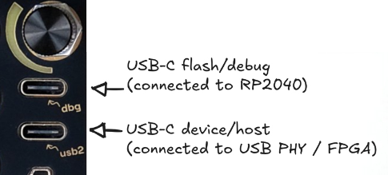

USB troubleshooting
This page collects some tips I have collected after helping a couple of users fight with Tiliqua’s USB-C ports on different operating systems.

Tiliqua has 2 USB ports:
The top one
dbgis for updating Tiliqua.The bottom one
usb2is for use by user applications. This is used for example by XBEAM for USB audio streaming (in USB DEVICE mode), or by POLYSYN for USB MIDI (in USB HOST mode).
dbg USB port (top, for flashing)
Webflasher doesn’t work
Depending on your OS, you may need to do some setup before being able to flash your device with tiliqua-webflash. These tips are at the bottom of the webflasher page, and copied here:
- macOS: No setup needed.
Note: I had one report that the webflasher does not work with very old versions of OS X (i.e a few years old).
- Windows: Use Zadig to install a WinUSB driver for the device:
Plug in Tiliqua
Run Zadig
In the menu, under ‘Options’, choose ‘List All Devices’
In the main drop down, select the Tiliqua ‘apfbug’ device
Select ‘WinUSB’ in the drop down near the green arrow
Click ‘Install Driver’, wait for it to complete.
Refresh this page, flashing should work.
Linux: You may need to add a udev rule so Tiliqua can be accessed without sudo.
usb2 USB port (bottom, audio/MIDI)
USB audio - nothing enumerates
- Assuming you are in an app with USB streaming (like XBEAM) – if you are using a USB-C to USB-C cable and your OS does not show anything at all when plugged into the
usb2port : Try a different USB-C cable. The nice 5GBps+ ones are more likely to be good.
If this doesn’t work, try using a USB-A to USB-C cable instead.
USB audio - glitchy audio (any OS)
- Assuming you are in an app with USB streaming (like XBEAM) – if you hear periodic popping, this usually due to:
`usb-mode` setting: For USB audio streaming, I recommend always setting
MISC->usb-mode=enableBEFORE plugging in your PC. Otherwise, the USB audio clock sync can get confused in rare cases.USB cable: if you are using a long USB cable - especially longer than 2m or so, this can cause USB packet loss. Try the same cable with a normal USB audio interface, you’ll usually get pops there as well if the cable is too long.
Buffer size: It depends which driver and OS you are using, what is optimal, but I recommend playing with buffer sizes between 128 and 2048 to see what works best on your machine.
USB audio - Windows / WASAPI shows separate input and output devices
- Some versions of Windows cause WASAPI to enumerate Tiliqua’s 4 IN and 4 OUT channels as separate devices. There are 2 ways you can deal with this:
Instantiate both devices - In VCVRack you can just create 2 separate modules for the input and output sides, and use them together. This has the downside that you may need high buffer sizes like 1024 for it to work glitch-free.
- Try switching to an ASIO driver like FlexASIO. How?
Install FlexASIO and FlexASIO GUI
Below is the
FlexASIO.tomlI end up with after configuring FlexAsio GUI for 4x4 operation and writing it to the default location (you can’t use this directly due to the german device names probably, but you should end up with something similar from the FlexAsio GUI - there are plenty of guides on how to set this up on the web):
backend = "Windows WASAPI" bufferSizeSamples = 256 [input] device = "Mikrofon (2- Tiliqua)" channels = 4 [output] device = "Lautsprecher (2- Tiliqua)" channels = 4
USB MIDI Host - Device is never powered up
- In
POLYSYN, if your MIDI device never receives power from Tiliqua despite havingusb-host=enabled: If you are using a USB-C (male) to USB-A (female) adapter in Tiliqua’s host port, try inserting the adapter into Tiliqua BEFORE you plug your device into the USB-A (female) port.
If that still doesn’t work, try a good brand like this which is known to work, being careful to plug in the adapter into Tiliqua before the MIDI device.
Note
This is a known bug that manifests with rare combinations of adapters in firmware v1.2.1 and earlier. A fix is linked here if you want to try it out already, but will be included in v1.2.2+!
USB MIDI Host - Device powers up but no response to MIDI events
Try re-plugging the device or cycling the
usb-hostoption while it is plugged in.Device is a USB Hub: You could be trying to use a MIDI device which has a built-in USB hub, that is, the device has a built-in USB hub, and the MIDI device is behind it. Tiliqua does not support this. This is rare, so far I only saw this on a Boss RC-600 Loop station, because it has a built-in sound card and MIDI device behind an integrated USB hub. In such cases I suggest using DIN/TRS MIDI instead. You can check this on Linux in dmesg or in Windows in device manager.
USB MIDI Host - Device powers up but MIDI events are glitchy / have missing notes
There was a known bug in POLYSYN v1.1.1 and earlier with how Sysex and Clock messages were handled. This is now fixed in the latest versions.